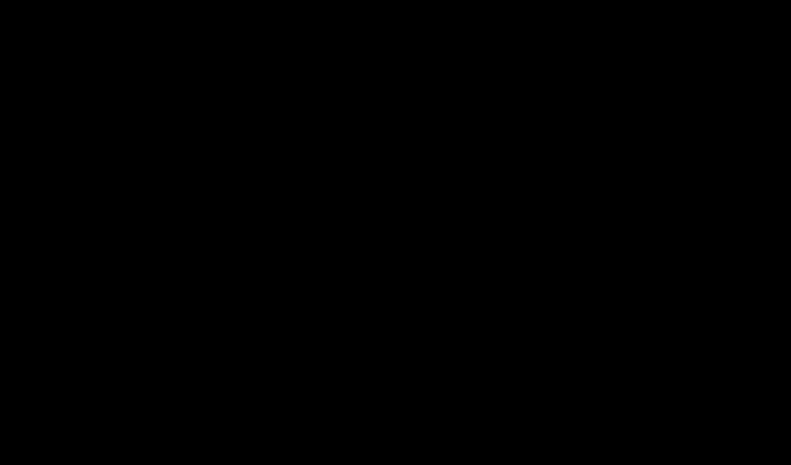
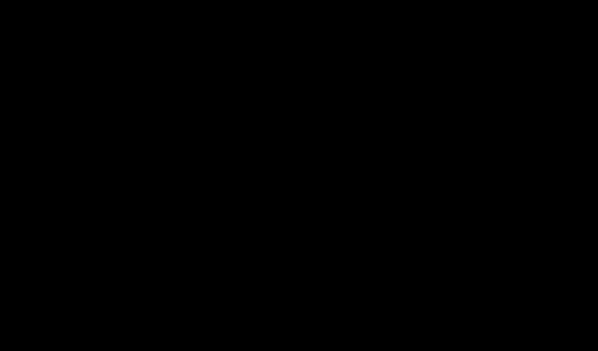

Flowfield

Visual exploration
Flowfield is a visual research project constructed with shaders in the VFX graph (Unity) as a way to explore to dynamic real-time graphics. The particles flow through a field that is changing according to a depth texture.
 


Adding physics
Over the course of several iterations, I started to implement variations with forces. In addition to the depth texture, there would be random wind forces that would affect the particles in a more natural way. Suddenly, I started thinking in terms of attraction and repulsion as a way to mold the outcome of the shaders.


Stamping
I quickly realized that you could create some cool stamping effects by controlling the intensity of particle attractions and the way they spawn according to the depth texture.

Smoothing the attraction
I was always attracted to the idea of emerging patterns in the systems that we create. The idea that your artwork will, unknowingly to you, shift it's appearance over time by tweaking certain parameters and letting it do it's thing. This is a good example of a river-like pattern that emerged as I was reducing the attraction factor on the depth texture.

Adding the third dimension
Up until this point, I was strictly working in 2D to simplify the prototyping process but I eventually ported the shaders to 3D and started to imagine the Flowfield in a 3D grid instead.


Color and Flow
The visuals were pretty linear. So, I needed to improve and re-iterate on them by creating relationships between the depth texture, the density, the speed and color of the particles. This resulted in a nice looking Flowfield that emulated the flow of fire in stylistic way!